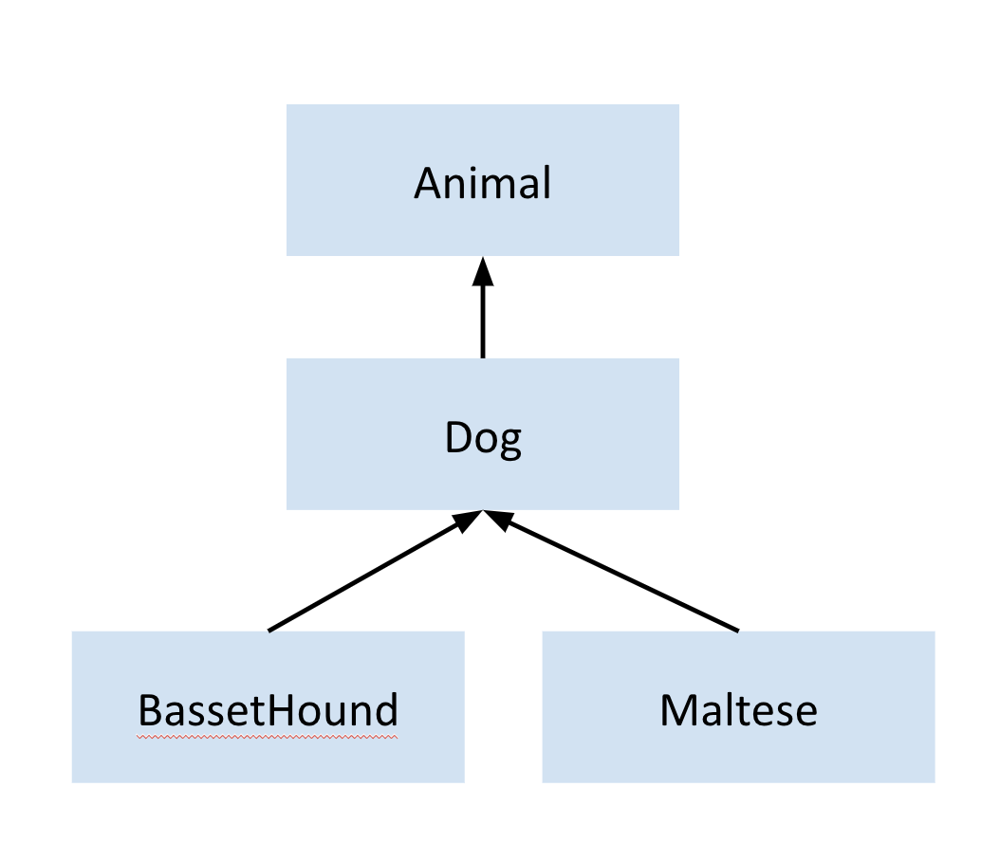
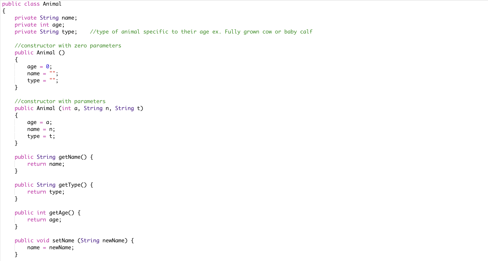
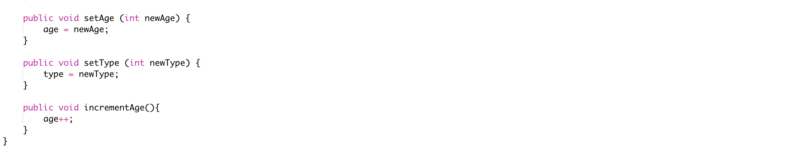
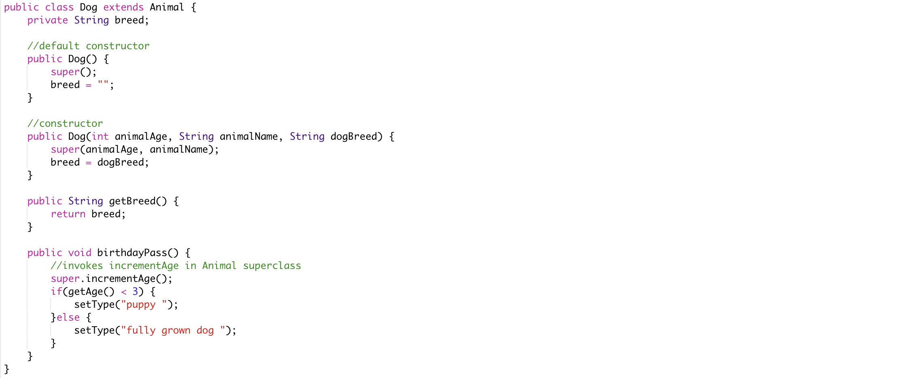

Back to Tutorials
Inheritance
Inheritance is an important pillar of OOP(Object Oriented Programming). It defines a relationship between objects that share the same characteristics. It is a mechanism where a new class (subclass) is created from an existing class (superclass). The subclass inherits the characteristics of its superclass meaning that the subclass absorbs its state and behaviours and adds its own unique features. There are many benefits of inheritance, some of them being that you can avoid duplicate code, define a common protocol for a group of classes, and reuse code that has already been tested or bugged. Be aware that a subclass is actually bigger than a superclass contrary to the names, as it contains more methods and data.
A subclass can also be a superclass for another subclass which can lead to an inheritance hierarchy of classes. There are two types of relationships in a hierarchy: an Is-A relationship and a Has-A relationship. The diagram below is a model of the relationship between the following objects: Animal, Dog, Basset Hound, and Maltese. In order to determine the type of relationship it is, using some key sentences can be very helpful. It can be determined as an is-a relationship, when using the phrase, "is an example of" or "is a type of" between two objects, and the sentence makes sense. For example, "A subclass is type of class" or "The Basset Hound is a type of Dog". On the other hand, some clues for a has-a relationship can be determined by the phrases, "Has ownership of" or "contains". For example, "A class contains a property", or "My dog has ownership of a collar. Based on the diagram below, a Dog is-a Animal, a BassetHound is-a Dog, and a Maltese is-a Dog.

In order to implement subclasses, the keyword extends must be used. The general format should look like the following:
public class Superclass{
//methods, constructors, variables, and additional data members
}
public class Subclass extends Superclass{
//methods, constructors, variables, and additional data members
}
Now, consider the following classes below in which the Dog subclass extends the Animal superclass:
 

In the Animal example, the Dog subclasses inherits all of the methods of the Animal superclass. Although a subclass inherits the public and protected of its superclass, it does not inherit the private methods or instance variables. In order for a subclass to access these, the mutator and accessor methods should be used. Seen in the example above, as the age and name variables of the Animal are private, the public getter and setter methods are invoked. This is why the Dog uses getAge() to access and modify the variable type.
By defining a method with the same return type and method signature, any method in the super class can be overridden in a subclass. If the code to overwrite the method includes a call to the superclass method, it is called partial overriding. This can occur when the subclass wants to do something extra to what the superclass already does. This can be achieved by using the keyword super in the implementation. However, make sure to note that private methods cannot be overridden. The incrementAge() method in the Dog subclass partially overrides the matching method in the Animal class. The statement super.incrementAge() signals that the incrementAge in the super should be invoked. The additional test
if(getAge() < 3) {
setType("puppy");
} else {
setType("fully grown dog");
}
This allows a Dog to have a type, “puppy” if the age is less than 3 and a “fully grown dog” if the age is greater than 3.
Another important concept to know is that constructors cannot be inherited. If there is no constructor that is written for a subclass, the default constructor with no parameters in the superclass will be generated. A compilation error will occur if there is no constructor in the superclass with zero parameters. A subclass constructor can be implemented with a call to the super method which would invoke the superclass constructor. This can be demonstrated by the statement super() used in the default constructor of the Dog subclass. However, the second constructor is called with parameters that match the ones used in the Animal superclass. Additionally, since there is the new instance variable breed in the subclass, it must also be explicitly initialized. A key fact to remember is that if super is used in the implementation of a subclass constructor, it must be used in the first line of the constructor body.
public Dog(int animalAge, String animalName, String dogBreed) {
super(animalAge, animalName);
breed = dogBreed;
}
Hopefully, this tutorial has given you a better idea about inheritance and the important concepts.
Back to Tutorials